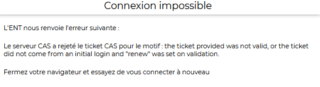
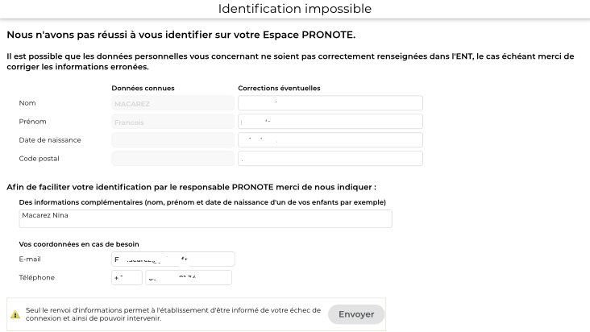

Problèmes sur monlycee.net ,
Pronote et
applications (PIX,
Voltaire,...)
Sur monlycee.net , vous n'avez pas vos identifiants de connexion ou vous n'arrivez pas à vous connecter.
L'accés se fait dorénavant sur https://monlycee.net/ avec les mêmes identifiant et mot de passe que sur
https://ent.iledefrance.fr.
Si votre enfant était dans la cité scolaire Victor Duruy l'année derniére, vous avez les codes et identifiants.
Avez vous vérifié dans vos spams si les codes n'y sont pas ?
Si vous ne vous souvenez pas de votre mot de passe, faites mot de passe oublié.
Si vous ne vous souvenez pas de votre identifiant, faites identifiant oublié.
Rappelez vous que dans la majorité des cas: l'identifiant est nom.prenom avec parfois un chiffre à la fin.
Sur monlycee.net , vous ne voyez plus la messagerie.
L'accés à la messagerie se fait dorénavant sur https://monlycee.net/ avec les mêmes identifiant et mot de passe que sur monlycee.net.
Ou plus directement via https://web-mail.monlycee.net/
Vous pouvez aussi chercher dans les applications , l'application : Mail Pronote Drive Agenda
Vous avez aussi accés à un drive et à Pronote .
Sur monlycee.net , vous ne voyez plus Pronote .
L'accés à Pronote se fait dorénavant sur https://monlycee.net/ avec les mêmes identifiant et mot de passe que sur ENT .
Vous pouvez aussi chercher dans les applications , l'application : Mail Pronote Drive Agenda 
Vous avez aussi accés à un drive et à la messagerie .
Sur monlycee.net mobile ,
l'application n'existait pas en 2023/2024. Il y a une nouvelle application depuis 2024/2025.
.
Sur monlycee.net , On vous
demande de changer de mot de passe mais cela ne fonctionne pas.
Il faut mettre au moins 12 caractéres (et pas 8 comme cela peut être
affiché dans la version en anglais), au moins 1 majuscule, au moins 1
minuscule, au moins 1 chiffre, au moins 1 caractére spécial (@.!$?)
Sinon passer à la section suivante : "...la connexion ne marche pas."
Sur monlycee.net , Vous avez les
codes d'activation OU Vous avez votre identifiant et mot de passe
mais la connexion ne marche pas.
D'abord, vérifier bien l'URL. Etes vous bien sur https://monlycee.net ou
https://psn.monlycee.net ?
Vous ne devez pas être sur https://ent.parisclassenumerique.fr (Les
deux interfaces se ressemblent beaucoup) ni sur
https://formation.ent.iledefrance.fr .
En général, c'est une ancienne connexion qui bloque l'activation :
-
Méthode 1 : Supprimer ent.iledefrance.fr ou monlycee.net de la liste de vos
mots de passe enregistrés
(C'est le mieux).
-
Méthode 2 : Changer de Navigateur et/ou d'ordinateur (firefox, Chrome,
Edge, Opéra, Safari,...) mais vous ne pourrez vous connectez qu'à
partir de ce nouvel outil.
-
Méthode 3: Ouvrir une fenêtre de navigation privée. (Cela ne marche
pas toujours)
-
Méthode 4 : Supprimer les cookies du navigateur que vous utilisez. Je
donne des indications ci-dessous mais cela peut varier suivant la
version.
Vous pouvez aussi consulter le chapitre supression des cookies.
Si rien ne marche, envoyez un message sur
l'Assistance monlycee.net.
Supprimer les cookies :
Dans Chrome
- Sur votre ordinateur, ouvrez Chrome.
-
En haut à droite, cliquez sur les trois petits points
.
-
Cliquez sur Plus d'outils. Effacer les données de navigation.
-
En haut de la page, choisissez une période. Je conseille "toutes les
données".
-
Cochez les cases face à "Cookies et données de site" et "Images
et fichiers en cache".
- Cliquez sur Effacer les données
Dans Mozilla Firefox 104 et version plus actuelle
-
Cliquez sur l'icône Menu en haut à droite , les trois traits
:
- Cliquez sur Historique.
- Cliquez sur Effacer l'historique récent...
-
Dans la plage de temps à effacer : menu déroulant, sélectionnez Tout.
-
Cochez les cases applicables pour les Cookies et le Cache.
- Cliquez sur le bouton OK
Sur monlycee.net , la messagerie n'envoie plus de notification. Il faut
paramétrer une notification vers votre courrier.
Regardez la vidéo pour faire une notification vers son courrier
Vous pouvez aussi faire une redirection du courrier :
le tutoriel de redirection vers votre messagerie
personnelle.
ATTENTION: Vous ne pourrez pas répondre aux messages à partir de votre
messagerie personnelle. Vous ne pouvez répondre qu'à partir de la
messagerie de monlycee.net. Je conseille donc plutot la notification plutot que la redirection.
Sur monlycee.net , vous avez le message :
"Sorry you have been blocked"
Ne seriez vous pas à l'étranger ?
- Si c'est le cas, vous ne pourrez pas vous connecter. Il faut traverser la frontière et revenir en France. Peut être que l'utilisation d'un VPN avec un serveur en France résoudrait le problème.
- Si ce n'est pas le cas, essayer de changer de connexion. par exemple si vous êtes en 4G connectez vous en WI-fi ou vice-versa. Je n'ai rencontré qu'un seul cas. Pour l'instant, je n'ai
pas de solution pérenne.
Sur monlycee.net , vous n'arrivez pas à accéder à la messagerie et vous avez le message :
"Une anomalie a été détectée".
- Méthode 1 : Essayer d'ouvrir https://monlycee.net dans un autre onglet ou une autre fenêtre du navigateur utilisé. par exemple en cliquant sur le lien suivant: https://monlycee.net
- Méthode 2 : Essayer avec un autre navigateur (Safari, Chrome, Firefox, Opera, Qwant,...).
- Méthode 3 : J'émets l'hypothése qu'en supprimant le mot de passe ent.iledefrance de la liste des mots de passe et en
vous reconnectant, cela résoudrait le problème mais je n'ai pas pu encore constater cette solution.
Sur un mobile, vous n'arrivez pas à vous connecter à monlycee.net (via un navigateur).
Une ancienne connexion bloque l'accès. Il faut surement effacer
l'enregistement de l'ancien mot de passe du navigateur.
Méthode 1 : Supprimer ent.iledefrance de la liste des mots de passe
Méthode 2: Changer de navigateur (Chrome, Firefox, Edge, Safari,
Opera, Qwant ...).
Méthode 3 : Passer en navigation privée
.
Sur monlycee.net , vous n'arrivez
pas à vous connectez à
Pronote .
-
Si vous avez le message ci-dessous, rafraichissez l'écran jusqu'à
l'obtention de la connexion.

-
Si vous avez le message Identification impossible suivant :

Ce formulaire ne résout pas toujours le probléme. Souvent un probleme d'identifiant ne fait pas le lien monlycee.net-Pronote. Vous
devez contacter
l'Assistance monlycee.net
et expliquez votre problème.
Sur Pronote mobile ,
vous voulez créer un compte.
La procédure est la suivante:
-
Faites ajouter un compte sur l'application puis sur un ordinateur
connectez vous à monlycee.net puis à Pronote et flasher le QR code (en
cliquant haut à droite de votre nom). On vous demandera un code PIN,
c'est à vous de l'inventer pour autoriser l'installation
sur le téléphone.
Sur Pronote mobile ,
Vous ne pouvez pas vous connectez et/ou un de vos comptes n'est pas accessibles et/ou vous voyez le symbole de
type accés refusé: .
Il faut pour cela vider les données de l'application Pronote sur le
téléphone.
La désinstallation et réinstallation est rarement suffisante.
La procédure sur le téléphone est la suivante:
-
Essayer d'abord l'installation et la réinstallation de l'application
Pronote (cela marche parfois sur iPhone) si vous ne voyez plus le
compte sur l'application passer à l'étape 3.
-
Sinon aller dans paramètres puis
application (ou gérer les applications) puis
Pronote puis stockage et vider les
données (données et cache)
-
Faites ajouter un compte sur l'application puis sur un ordinateur
connectez vous à monlycee.net puis à Pronote et flasher le QR code (en
cliquant haut à droite de votre nom). On vous demandera un code PIN,
c'est à vous de l'inventer pour autoriser l'installation
sur le téléphone
Sur Pronote mobile ,
l'affichage de votre nom est incorrect
Vérifier d'abord l'affichage sur l'application Pronote en passant par
un ordinateur et monlycee.net.
Si l'affichage est aussi incorrect sur l'ordinateur vous devez
contacter
l'Assistance monlycee.net
Sinon il faut vider les données de l'application Pronote sur le
téléphone.
La désinstallation et réinstallation est rarement suffisante.
La procédure sur le téléphone est la suivante:
-
Essayer d'abord l'installation et la réinstallation de l'application
Pronote (cela marche parfois sur iPhone) si vous ne voyez plus le
compte sur l'application passer à l'étape 3.
-
Sinon aller dans paramètres puis
application (ou gérer les applications) puis
Pronote puis stockage et vider les
données (données et cache)
-
Faites ajouter un compte sur l'application puis sur un ordinateur
connectez vous à monlycee.net puis à Pronote et flasher le QR code (en
cliquant haut à droite de votre nom). On vous demandera un code PIN,
c'est à vous de l'inventer pour autoriser l'installation
sur le téléphone
Sur monlycee.net , vous n'arrivez
pas à télécharger un fichier.
-
1er cas : Il y a un bouton
qui n'est pas toujours visible. Scroller et cliquer.
-
2ème cas : C'est un probléme de nommage des fichiers:
-
Utiliser seulement les caractères alphanumériques non accentués.
-
Utiliser une majuscule ou un underscore "_” comme séparateur
(tiret du 8).
Le tiret du 6 est controversé, personnellement je ne l'utilise pas.
- N'utiliser pas les autres caractères spéciaux.
Ne mettez pas d’espace entre les mots ni de caractères spéciaux
(accents, cédille).
Et surtout n'utilisez jamais les guillemets double ou
simple (apostrophe) c'est à dire double quote, quote simple gauche et
droite : " et ` et ' ( guillemets du 3, du 4 et du 7). Beaucoup de
transferts de fichiers échoueront à cause de cela.
Sur monlycee.net , Vous avez deux
enfants ou plus. Vous ne recevez pas les messages qui concernent
l'un de vos enfants.
Vous avez surement un autre compte rataché à l'enfant concerné.
Vérifiez que vous n'avez pas reçu une fiche de connexion le concernant
sinon envoyez un message à
l'Assistance monlycee.netT
en expliquant vos difficultés.
Sur monlycee.net , vous voulez
fusionnez deux comptes.
Vous avez deux comptes un pour le lycée et un pour le collége ou deux
comptes lycée ou deux comptes collège.
Vous pouvez procéder à la fusion
des deux comptes
Sur monlycee.net , Vous arrivez
bien sur une page monlycee.net mais cela ne correspond pas à vos attentes.
Par exemple ce n'est pas le bon lycée/collége.
Vérifier bien l'URL (c'est à l'endroit en haut du navigateur où
s'écrit l'adresse du site). Etes vous bien sur
https://monlycee.net ou
https://psn.monlycee.net
et pas https://ent.parisclassenumerique.fr ? (Les deux interfaces se
ressemblent beaucoup) ni sur https://formation.ent.iledefrance.fr
.
Sur monlycee.net , les
applications (PIX,
Voltaire...) qui passent par le médiacentre
ne fonctionnent pas
Des informations obsolétes ont été enregistrées via des cookies sur le
navigateur.
On peut faire du plus simple au plus compliqué:
-
Méthode 1 : Changer de Navigateur (Chrome, Firefox, Edge, Safari,
Opera, Qwant ...)
- Méthode 2 : Ouvrir une fenêtre de navigation privée.
-
Méthode 3 : Supprimer les cookies du navigateur que vous utilisez.
Vous pouvez aussi consulter le chapitre supression des cookies.
Sur monlycee.net , les
applications (PIX,
Voltaire...) qui passent par le médiacentre
n'apparaissent pas.
-
Attendez quelques secondes et/ou rafraichissez la page et/ou changer
de navigateur. Le médiacentre n'est pas très réactif.
-
L'application que vous cherchez ne vous a peut être pas été attribuée.
Contactez
l'Assistance monlycee.net.
Sur monlycee.net vous ne trouvez
pas certaines
applications comme PIX,
Voltaire, Pearlree, Universalis Education...
-
Vous devez aller les chercher dans l'application médiacentre
-
L'application que vous cherchez ne vous a peut être pas été attribuée.
Contactez
l'Assistance monlycee.net.
Suppression des cookies
Votre question n'existe pas, vous n'avez pas la réponse, envoyez un
message sur
l'Assistance monlycee.net